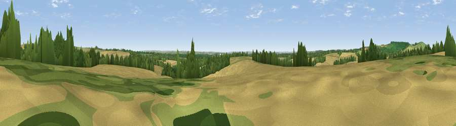

Viewpoint near Old Burghclere
#27017 in England · top 33% of its area beats it · near Old BurghclereThe view, rendered

A 360° render of this exact spot computed from the terrain model, tree cover and land cover — summer colours, afternoon light, calibrated against photographs of famous viewpoints. Real trees, hedges and buildings will differ in detail.
The panorama
Grey silhouette: terrain skyline in each direction (720 bearings, Earth curvature and refraction included). Dashed green: skyline with trees (+15 m) and buildings (+8 m) as obstacles. Blue strip: how far the ground is visible on each bearing.
Where the view opens
Wedge length = distance to the farthest visible ground on that bearing (vegetation-aware). Rings at 10, 25 and 50 km.
What fills the view
61% cropland · 20% woodland · 18% grassland
Angular shares of the visible panorama (visual magnitude), not map area. Landscape diversity 0.41 (0–1 Shannon).
Key numbers
More beautiful places nearby
The staircase of upgrades: each row has a higher view potential than everything closer. Driving times are estimates from straight-line distance, calibrated against real road routing — check an actual route before setting out.
| Place | Direction | Drive | Score |
|---|---|---|---|
| Ladle Hill | NNE · 2 km | ~6 min | 70.5 |
| Beacon Hill | NNW · 3 km | ~7 min | 76.7 |
| Martinsell viewpoint | WNW · 31 km | ~48 min | 77.3 |
| Viewpoint near Buriton | SE · 42 km | ~62 min | 80.0 |
| Beacon Hill | SE · 49 km | ~70 min | 85.8 |
| Mottistone Down | S · 70 km | ~94 min | 87.2 |
| Viewpoint near St. Lawrence | S · 78 km | ~101 min | 88.2 |
| Viewpoint near Niton | S · 79 km | ~103 min | 89.2 |
51.29017, -1.32559 · source: screening · position refined by local search. Computed location — check access rights before visiting.